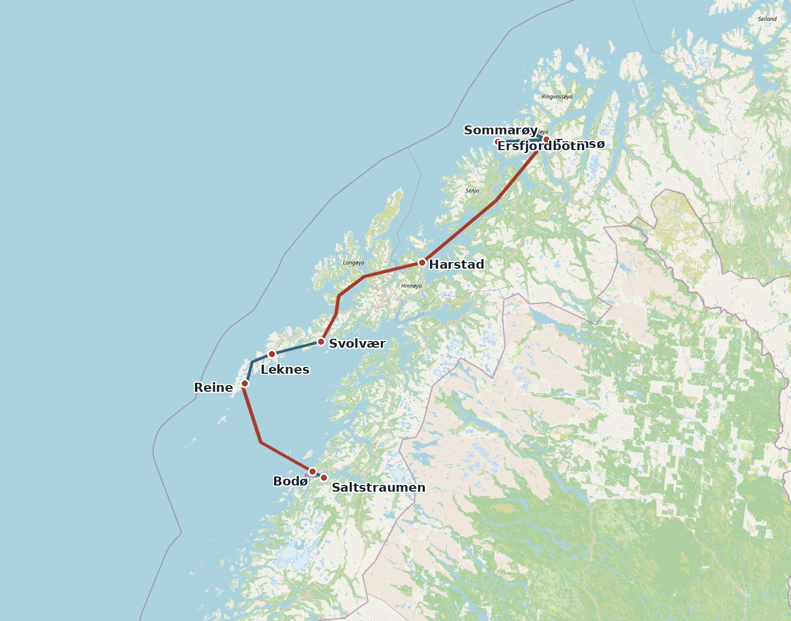
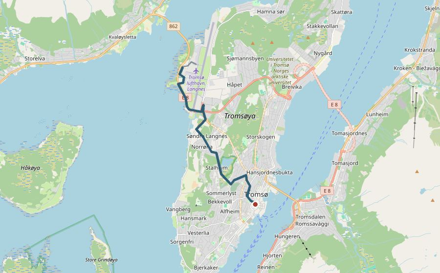
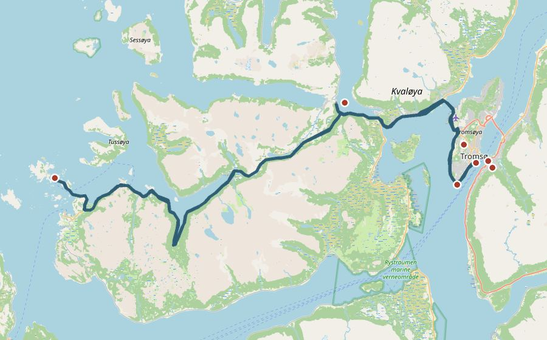
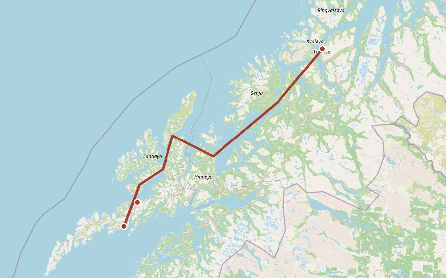
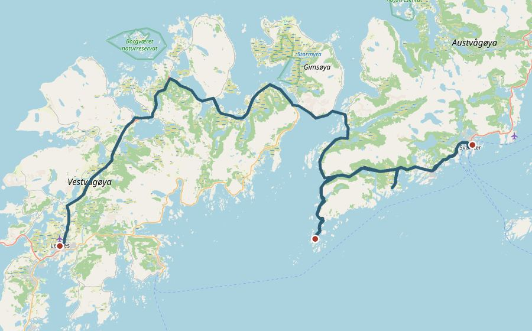
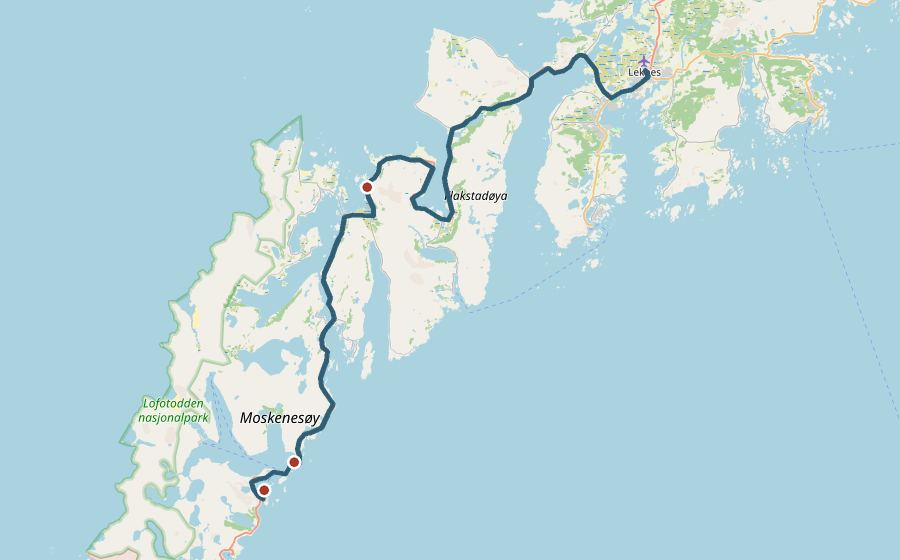
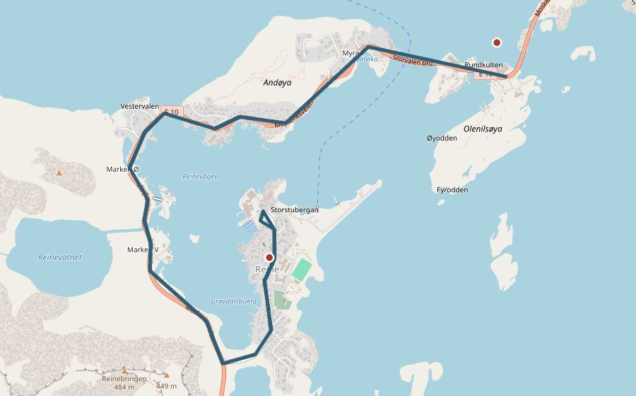
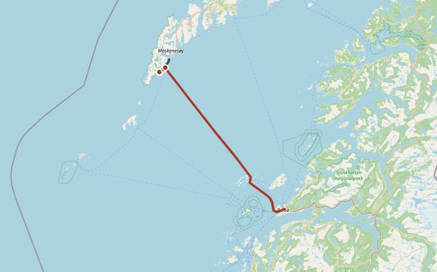
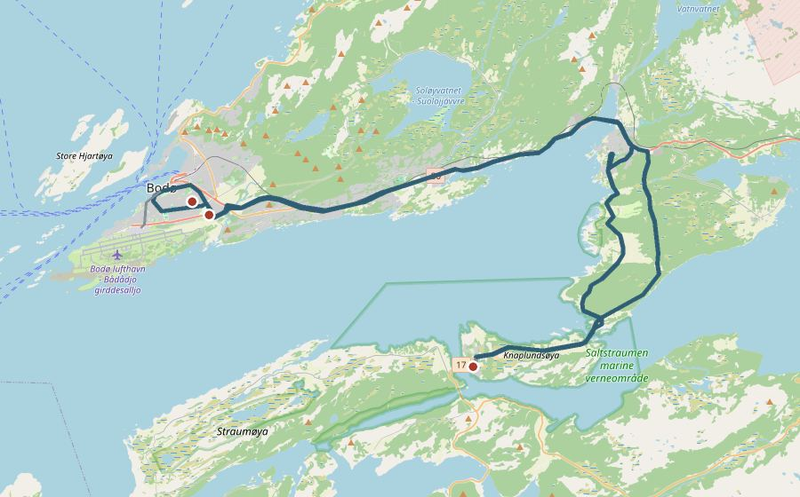
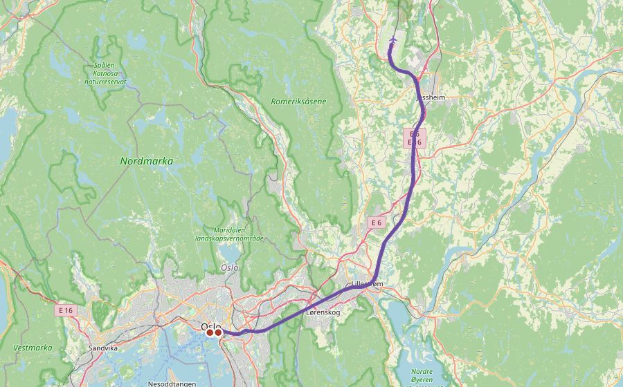

特罗姆瑟 · 罗弗敦 · 博德 · 奥斯陆 · 2027 年 3 月
方案 C：03.05 周五 – 03.13 周六，9 天。每天一张路线图、一张带价格的行程表，点照片看景点介绍。截至 2026-10-21 没有任何预订或付款，所有条目均为「暂定」。

巴士、游轮、渡轮和火车线路来自 Entur 的实际走向（游轮只有停靠港之间的连线）。在 claude.ai 上打开时，在线地图无法加载，会自动换成静态图。
按"越早越省、越晚越容易满"排序。能免费取消的先订；不能取消的确认后再付。今天是 2026-10-21。
价格单位 CHF（1 NOK = 0.088）。罗弗敦和博德的巴士按成人价；有 ISIC 国际学生证可半价（UNIGE 学生卡单独不被 Reis Nordland 接受）。特罗姆瑟 18–29 岁按"青年"票价，24 小时票更划算。
| 时间 | 安排 | CHF |
|---|---|---|
| 19:25–23:20 | Norwegian DY1613 日内瓦 → 特罗姆瑟直飞 暂定只带座位下小包；官网加登机箱后 99 | 77 |
| 23:34–23:55 | 40 路（或 26/24/42 路）机场 → 市区，买 24 小时票 Entur 202724 小时 1 区票 NOK 140，在机场激活，可一直用到周六晚 | 12 |
| — | Clarion The Edge（积分约 16,000 分） 未核实订不到时 Airbnb 约 115 | 0 |
| — | 餐饮（机上自备） | 10 |
| 当天小计 | 99 |
Clarion The Edge，码头旁，24 小时前台，含早餐

巴士/火车船步行景点（可点）
| 时间 | 安排 | CHF |
|---|---|---|
| 09:00 → 10:11 | 422 路 Prostneset → Sommarøy Entur 202724 小时票已含 | 0 |
| 12:34 → 14:07 | 422 路回城；退房，行李寄存Tromsø Luggage Storage 24 小时 NOK 100；或请酒店前台代存（待确认） | 8.8 |
| 14:50 → 15:39 | 42 路 Bankgata → Eidkjosen 换 425 → Ersfjordbotn Entur 202724 小时票已含 | 0 |
| 15:39–18:48 | 峡湾日落（约 16:50）、蓝调，天黑后等极光 | — |
| 18:48 → 19:43 | 回城（周六末班） Entur 2027 | 0 |
| 20:00–23:00 | Fjellheisen 缆车看夜景和极光 参考往返 NOK 645；正在建设"Fjellheisen 2.0"，冬季营业待确认；不坐就去 Telegrafbukta / Prestvannet 免费看 | 57 |
| 23:45–01:15 | Havila Capella 靠港办理登船，01:15 截止 官方 2027 | — |
| — | 餐饮超市为主（约 NOK 250/天） | 22 |
| 当天小计 | 88 |
Havila 船上（座位票）

巴士/火车船步行景点（可点）
| 时间 | 安排 | CHF |
|---|---|---|
| 01:30 → 18:30 | Havila 特罗姆瑟 → 斯沃尔韦尔（Harstad 08:00、Sortland 12:30、Stokmarknes 14:15–15:15） 未核实港到港座位票，价格未核实（参考 NOK 900–1,050） | 85 |
| 15:00–18:30 | 待在甲板：Raftsundet 海峡 | — |
| 晚上 | 港口看极光 | — |
| — | Fast Hotel Svolvær 暂定Trip.com 66 / Booking 88，不含早餐 | 66 |
| — | 餐饮（船上自带补给） | 22 |
| 当天小计 | 173 |
Fast Hotel Svolvær

巴士/火车船步行景点（可点）
| 时间 | 安排 | CHF |
|---|---|---|
| 08:30–10:20 | 港口、Svinøya 红木屋，退房 | — |
| 10:30 → 11:11 | 743 路 → 亨宁斯韦尔 Entur 20272 区 NOK 66；有 ISIC 卡学生半价 | 5.8 |
| 14:21 → 14:57 | 743 路返回斯沃尔韦尔 Entur 2027 | 5.8 |
| 15:45 → 17:10 | 741 路 → 莱克内斯 Entur 20274 区 NOK 155；错过就坐 300 路 20:10 | 14 |
| — | Lofoten Overnatting 暂定3/5 前可免费取消 | 88 |
| — | 餐饮罗弗敦超市少、略贵 | 25 |
| 当天小计 | 138 |
Lofoten Overnatting，莱克内斯

巴士/火车船步行景点（可点）
| 时间 | 安排 | CHF |
|---|---|---|
| 08:40 → 09:22 | 742 路 → Ramberg 海滩 Entur 20272 区 | 5.8 |
| 13:20 → 13:45 | 742 路 → Hamnøy，桥上拍红屋 Entur 20272 区 | 5.8 |
| 14:45 → 14:55 | 772 路 → 雷讷 / 住处 参考上学日线路；不开就坐 300 路 16:50 | 4.0 |
| — | Moskenes 码头旁 Airbnb（第 1 晚） 暂定2 晚 115，3/8 前可免费取消 | 58 |
| — | 餐饮 | 25 |
| 当天小计 | 98 |
Moskenes 码头旁 Airbnb 单间

巴士/火车船步行景点（可点）
| 时间 | 安排 | CHF |
|---|---|---|
| 07:00–11:30 | Reinehalsen 晨光（日出约 06:50）、港口、晾鱼架 | — |
| 13:35 → 13:41 | 772 路 → Olenilsøya，走 400 m 到 Sakrisøy 参考上学日线路 | 4.0 |
| 14:47 → 14:55 | 772 路返回（742 路 13:48、16:53 也可以） 参考 | 4.0 |
| 晚上 | 雷讷周边看极光 | — |
| — | Airbnb（第 2 晚） 暂定 | 58 |
| — | 餐饮 | 25 |
| 当天小计 | 90 |
Moskenes 码头旁 Airbnb 单间

巴士/火车船步行景点（可点）
| 时间 | 安排 | CHF |
|---|---|---|
| 09:57 → 10:27 | 742 路雷讷 → Å Entur 2027 | 4.0 |
| 10:30–12:15 | 挪威渔村博物馆 参考成人 NOK 125 / 学生 95；冬季开放时间待确认 | 11 可选 |
| 12:20 → 12:26 | 772 路 → Sørvågen，Tind 海湾 Entur 2027或步行 2.9 km | 4.0 |
| 19:00 → 19:30 | 步行 2.2 km 到 Moskenes 码头唯一的晚班车 20:10 才到，赶不上 19:45 登记截止 | 0 |
| 20:30 → 23:45 | Torghatten 渡轮 → 博德（步行旅客免费） 官方 2027座位保证 NOK 65 可选，前一天 20:00 前订 | 0 |
| — | Smarthotel Bodø（含早餐） 暂定步行约 1 km | 84 |
| — | 餐饮 | 25 |
| 当天小计；可选另计 11 | 117 |
Smarthotel Bodø

巴士/火车船步行景点（可点）
| 时间 | 安排 | CHF |
|---|---|---|
| 上午 | 挪威航空博物馆成人 NOK 195 / 学生 160；或港口散步（免费） | 17 可选 |
| 12:32 → 13:10 | 200 路 → Saltstraumen 官方 20272 区 | 5.8 |
| 13:10–14:10 | 看入流最强的漩涡（约 13:00–13:45） 参考3/10 后用 BarentsWatch 48 小时预报复核 | — |
| 14:10 / 14:53 | 回博德，酒店取行李 官方 2027 | 5.8 |
| 约 18:00 | 1/2 路去机场（约 6 分钟） Entur 2027或步行 1.3 km | 4.0 |
| 19:45 → 21:20 | SAS SK4123 博德 → 奥斯陆（与次日同一张联程票） 暂定只带小包；带登机箱约 79 | 54 |
| — | 奥斯陆机场过夜Avinor：24 小时开放 | 0 |
| — | 餐饮 | 22 |
| 当天小计；可选另计 17 | 92 |
奥斯陆机场（备选 Comfort Grand Central，现金 118–150）

巴士/火车船步行景点（可点）
| 时间 | 安排 | CHF |
|---|---|---|
| 08:03 → 08:26 | Vy 火车 机场 → Oslo S Entur 2027无学生折扣；Flytoget 学生价 138 也可以 | 12 |
| 08:30–11:30 | 歌剧院、阿克什胡斯城堡（免费） 参考冬季歌剧院屋顶可能因冰雪部分封闭，待确认；城堡冬季 06:00–21:00 开放 | — |
| 11:34 → 11:57 | Vy 火车回机场 Entur 2027 | 12 |
| 13:25 → 16:00 | SAS SK4631 奥斯陆 → 日内瓦（联程第二段） 暂定已含在前一天的 54 里 | 0 |
| — | 餐饮 | 22 |
| 当天小计 | 46 |
到家

巴士/火车船步行景点（可点）
| 类别 | CHF |
|---|---|
| 机票 | 131 |
| 住宿 | 353 |
| Havila 船票 | 85 |
| 餐饮 | 198 |
| 缆车 | 57 |
| 交通（公交、火车）与寄存 | 117 |
| 合计 | 941 |
| 晚 | 首选 | 价格 | 备选 | 链接 |
|---|---|---|---|---|
| 03.05 特罗姆瑟 | Clarion The Edge（积分） | 约 16k 分；现金约 375 | Airbnb 自助入住 106–115 | 比价 · Airbnb · Airbnb 2 |
| 03.06 船上 | Havila 座位票 | ≈ 85 | — | Havila |
| 03.07 斯沃尔韦尔 | Fast Hotel Svolvær | 66 / 88 | Marina Hotel 100（含早） | 比价 |
| 03.08 莱克内斯 | Lofoten Overnatting | 88 | FURU 青旅床位 27（离莱克内斯 15 km） | 比价 |
| 03.09–03.10 雷讷一带 | Moskenes 码头旁 Airbnb | 115（2 晚） | Rostad Retro Rorbuer 约 78（2 晚，房型未确认） | Airbnb · Rostad |
| 03.11 博德 | Smarthotel Bodø | 84–94 | Comfort Hotel Bodø 116–120 | 比价 |
| 03.12 奥斯陆 | 机场过夜 | 0 | Comfort Grand Central 118–150 | Avinor |
| 项目 | 原值 | 新值 | 理由 |
|---|---|---|---|
| 去程 | DY1613，以为经奥斯陆，约 CHF 70 | DY1613 周五 19:25 直飞，23:20 到 | DY1613 是直飞 |
| 特罗姆瑟住宿 | 青旅/便宜单人房，确认午夜后可入住 | Clarion The Edge 积分 1 晚 | 积分在这里每分值约 CHF 0.023；码头旁，24 小时前台 |
| 周六上午 | 市中心、北极教堂、11:15 缆车 | Sommarøy 海岛（422 路） | 周六去 Sommarøy 可以当天往返 |
| Ersfjordbotn | 13:00–16:00 坐 425 路 | 14:50 → 15:39，18:48 回 | 周六市区没有直达车，13:00 前后没有班次 |
| 缆车 | 11:15–12:30，NOK 595 | 晚上看夜景和极光，NOK 645（现价），或去免费点 | 白天时间给了 Sommarøy 和峡湾 |
| 极光 | 自行追光或参团，23:45 前返港 | 自己看为主；报团只选 00:30 前回城的团 | 登船截止实际是 01:15；大巴团可能 02:00 才回 |
| Bus 743 | 参考返程班次 | 10:30 去 / 14:21 回，741 15:45 → 17:10 | 按 Entur 2027 核实 |
| Hamnøy → 雷讷 | 772 参考车次 | 772 14:45（上学日），备选 300 16:50 | 772 只在上学日运营 |
| Olenilsøya | 772 下午小循环 | 13:35 / 14:47；步行 4.4 km | 按 Entur 修正 |
| 雷讷 → Å | 09:30 | 742 09:57 | 09:30 没有车 |
| 去渡轮 | 742/772 接渡轮需核实 | 步行 2.2 km，19:45 前到 | 唯一晚班车晚于登记截止 |
| Saltstraumen | 09:00–12:00 | 13:10–14:10 | 原时段正好是平潮 |
| 博德下午 | 16:00–19:45 去机场（回程未定） | SAS 19:45 → 奥斯陆过夜 | 周五傍晚从博德当天到不了日内瓦 |
| 03.13 | 空白 | 奥斯陆半天，13:25 飞日内瓦 | 联程票最便宜，还多出半天 |
保留主要比较和取舍，方便以后回头查看。数字都是 2026-10-21 查到的。
| 维度 | A 南线 | B 东线 | C 紧凑（已选） |
|---|---|---|---|
| 日期 | 03.02–03.13，12 天 | 03.02–03.14，13 天 | 03.05–03.13，9 天 |
| 现金（只带小包） | ≈ 780 | ≈ 925 | ≈ 770 |
| 积分 | 64,000 | 64,000 | 16,000 |
| 不用积分 | ≈ 1,220 | ≈ 1,365 | ≈ 885 |
| 可看极光的夜晚 | 约 10 | 约 11 | 约 7 |
| 特点 | 周二直飞 CHF 67；特罗姆瑟 4 晚，最暗的 3/2–3/4；越野滑雪大师赛期间酒店紧张 | 罗弗敦 → 纳尔维克 → Abisko 两晚 → SJ 卧铺 → 斯德哥尔摩，周日 SWISS 回；纳尔维克每天一班火车 | 原结构，修正所有衔接 |
| 原计划补全后 | ≈ 1,060–1,100（原机票约 210 + 奥斯陆酒店约 120 + 特罗姆瑟 1 晚约 110） | ||
查于 2026-10-21。没有任何预订或付款。照片来自 Wikimedia Commons，作者和许可证见每张照片说明；地图 © OpenStreetMap 贡献者。